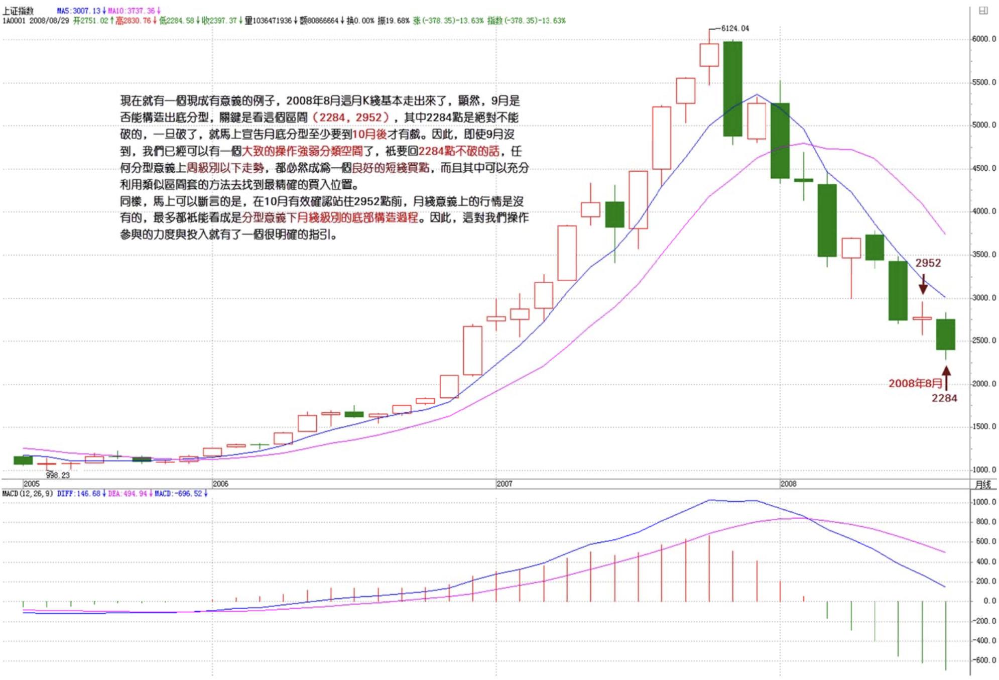
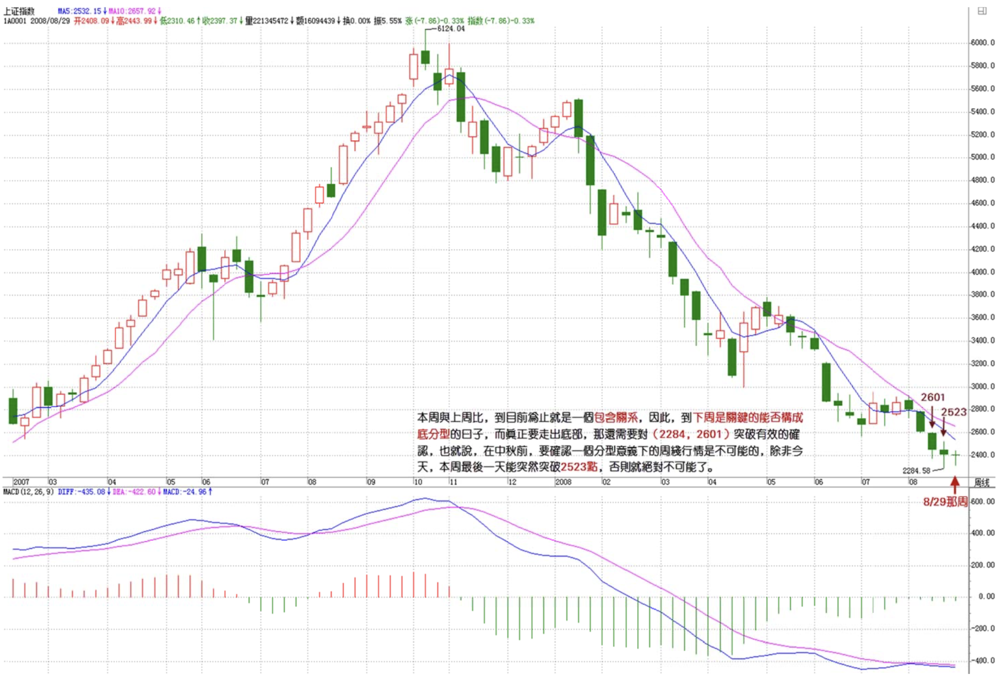
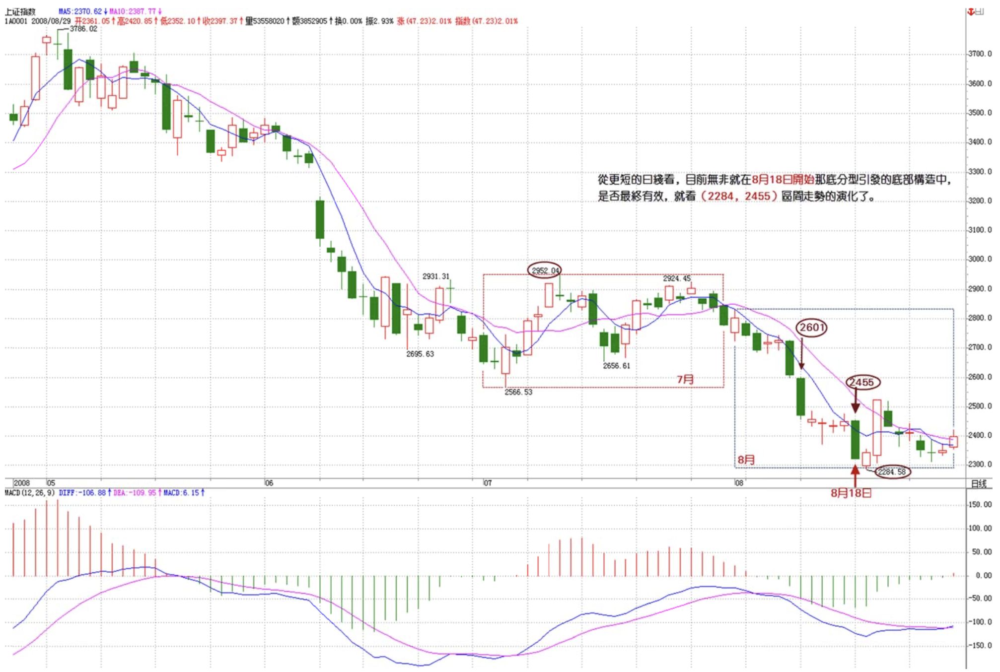

教你炒股票108：何谓底部？从月线看中期走势演化
2008/8/29 9:15:01
何谓底部？这里给出精确的定义，以后就不会糊涂一片了。底部都是分级别的，如果站在精确走势类型的角度，那么第一类买点出现后一知道该买点所引发的中枢第一次走出第三类买卖点前，都可以看成底部构造的过程。只不过如果是第三类卖点先出现，就意味着这底部构造失败了，反之，第三类买点意味着底部构造的最终完成并展开新的行情。当然，顶部的情况，反过来定义就是。
此外，用分型的角度同样可以给出底部的概念，只是这粗糙一点，对一时把握不了精确走势类型分类的，这是一个将就的办法；此外，一般性分析中，这方法也可以用，因为对把握大方向已经足够。
站在分型的角度，底部就是构成底分型的那个区间，而跌破分型最低点意味着底部构成失败，反之，有效站住分型区间上边沿，就意味着底部构造成功并至少展开一笔一上行情。其实，这都不是什么新鲜内容，但这里统一说出来，还是有好处的。同样，顶部反过来就是。
注意了，有了这个定义，就一定要搞明白，不是在底部的区间上买，而是相反，应该和中枢震荡的操作一样，在区间下探失败时买，这才是最好的买点，连这都搞不明白，就白学了。此外，底部是有级别的，日线图上的底分型，当然就对应着分型意义上的日线级别底部。
现在就有一个现成有意义的例子，2008年8月这月K线基本走出来了，显然，9月是否能构造出底分型，关键是看这个区间（2284，2952），其中2284点是绝对不能破的，一旦破了，就马上宣告月底分型至少要到10月后才有戏。因此，即使9月没到，我们已经可以有一个大致的操作强弱分类空间了，只要回2284点不破的任何分型意义上周级别以下走势，都必然成为一个良好的短线买点，而且其中可以充分利用类似区间套的方法去找到最精确的买入位置。
同样，马上可以断言的是，在10月有效确认站住2952点前，月线意义上的行情是没有的，最多都只能看成是分型意义下月线级别的底部构造过程。因此，这对我们操作参与的力度与投入就有了一个很明确的指引。

当然，对于一般投资者，月线图太大了，因此可以看周线图，例如，本周与上周比，到目前为止就是一个包含关系，因此，到下周是关键的能否构成底分型的日子，而真正要走出底部，那还需要对（2284，2601）突破有效的确认，也就说，在中秋前，要确认一个分型意义下的周线行情是不可能的，除非今天，本周最后一天能突然突破2523点，否则就绝对不可能了。

从更短的日线看，目前无非就在8月18日开始那底分型引发的底部构造中，是否最终有效，就看（2284，2455）区间走势的演化了。

操作其实很简单，一个基本的原则就是，任何走势，无论怎么折腾，都逃不出这个节奏，就是底、顶以及连接两者的中间过程，因此，在两头的操作节奏就是中枢震荡，只是底的时候要先买后卖，顶的时候要先卖后买，这样更安全点。至于中间的连接部分，就是持有，当然，对于空头走势，小板凳就是一个最好的持有，一直持有到底部构造完成。
而有技术的，根本就不需要什么小板凳，按操作级别，分清楚目前是三阶段中的哪一段，然后日日是好日，时时是花时，不赚钱那真是脑子有水了。亏钱都是错误操作引起的，不断反省，才会有进步的。